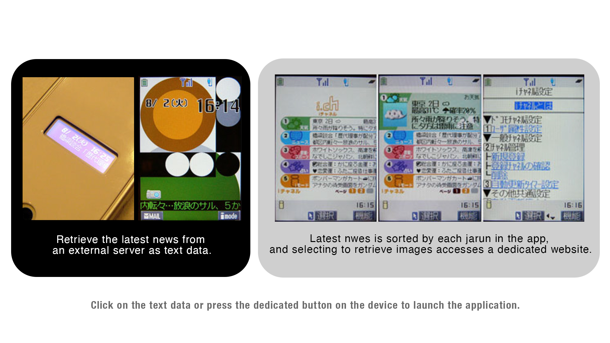
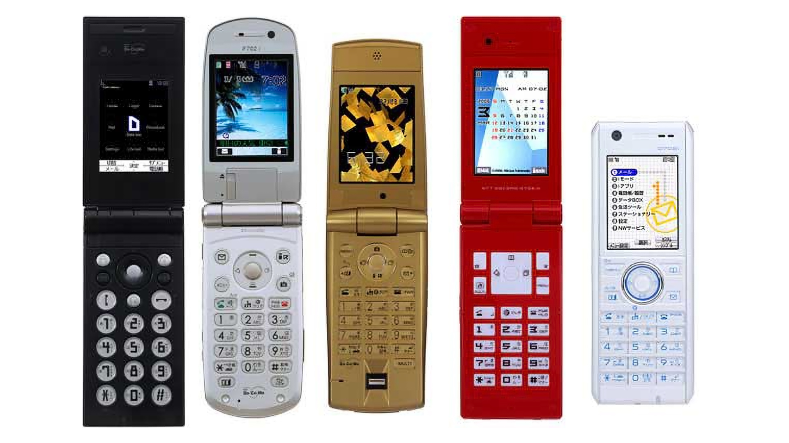

Project Overview
UI design / development of the pre-installed app "i-channel" for NTT DoCoMo.
Docomo i-Channel Detailed Documentation


Screen design, front-end coding.
Responsibilities
Highly acclaimed by the client, reaching approximately 17 million users by the end of December 2009.
Achievements
Staff: Creative Director: Takeshi Natsuno (DoCoMo), Director: Yutaka Sumi, Designer: Masanori Matsushima
Tools: Adobe Illustrator / Adobe Flash